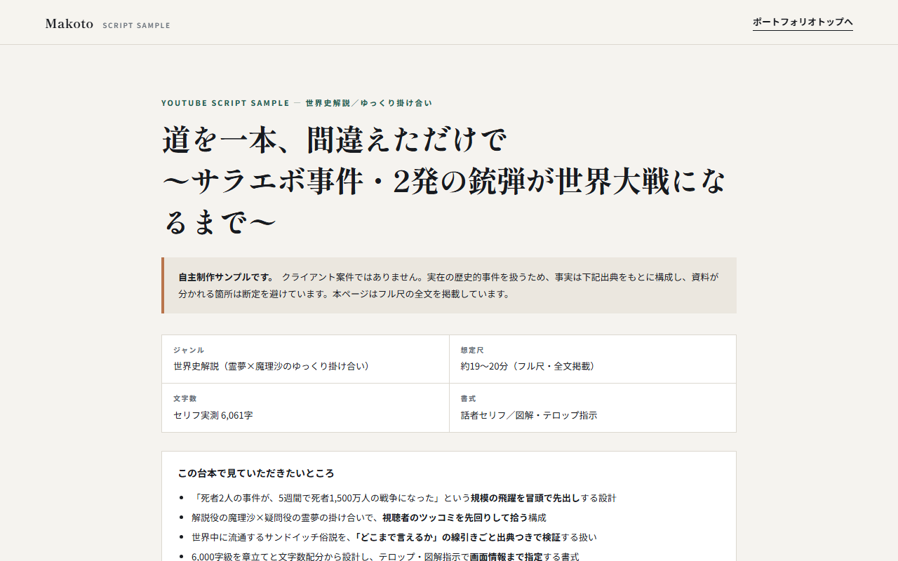
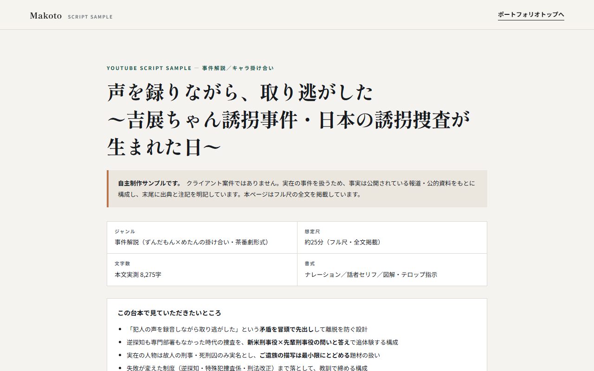
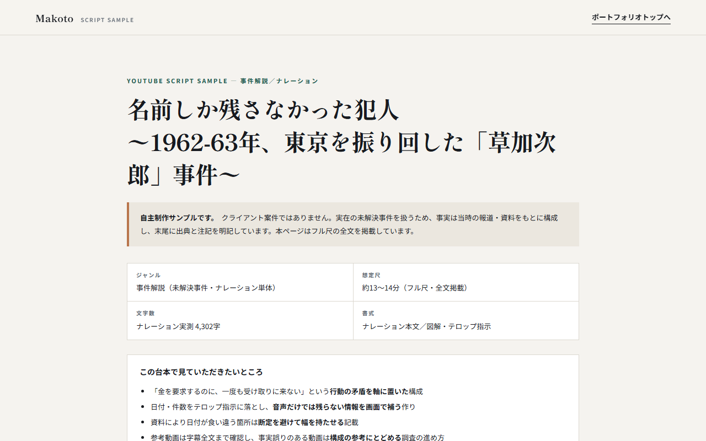
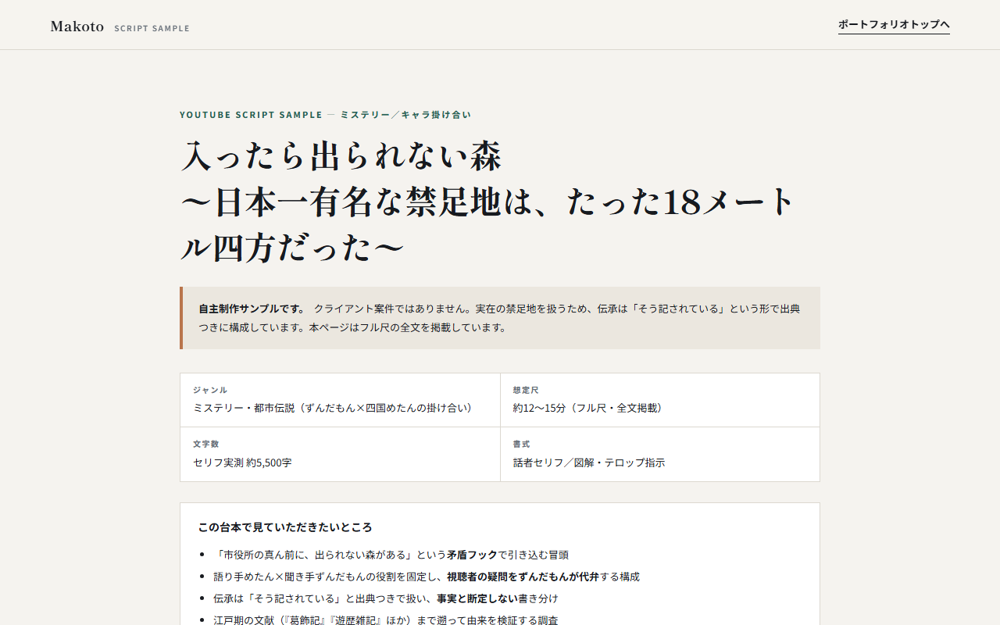
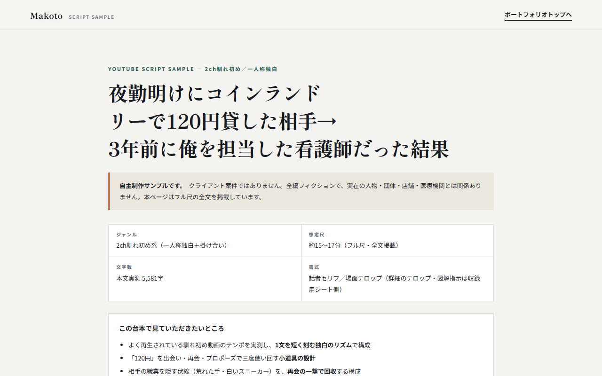
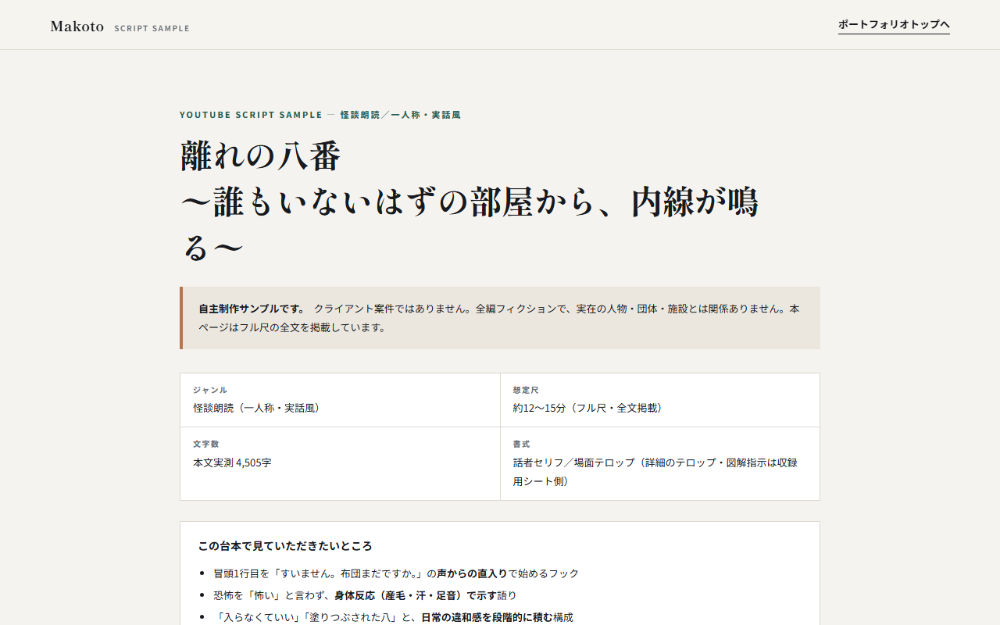

サラエボ事件（1914年）
霊夢×魔理沙のゆっくり掛け合いで世界史の事件を解説。約19〜20分・セリフ6,061字の全文を掲載。サンドイッチ俗説の検証と、開戦までの5週間の連鎖で構成しています。
台本を読む ↗YOUTUBE SCRIPT WRITING
台本サンプルを、ページ上で全文そのままお読みいただけます。納品形式はご指定に合わせます。Googleスプレッドシート・Googleドキュメント・Excel・Word・テキストなど、普段お使いのフォーマットのまま納品できます。そのほかの形式もご相談ください。
SCRIPT SAMPLES
各作品は別ページで全文を掲載しています。

霊夢×魔理沙のゆっくり掛け合いで世界史の事件を解説。約19〜20分・セリフ6,061字の全文を掲載。サンドイッチ俗説の検証と、開戦までの5週間の連鎖で構成しています。
台本を読む ↗
ずんだもん×めたんの掛け合いで実在事件を追体験する事件解説。約25分・8,264字の全文と出典・注記を掲載しています。
台本を読む ↗
実在の未解決事件をナレーション単体で解説するフル尺台本。約13〜14分・4,290字の全文と出典を掲載。日付が食い違う資料は断定せず記載しています。
台本を読む ↗
ずんだもん×四国めたんの掛け合いで、実在の禁足地の由来を江戸期の文献から検証するフル尺台本。約12〜15分の全文を掲載しています。
台本を読む ↗
過去の出来事を一次情報から調べてまとめる台本。約12〜13分・4,085字の全文と出典7件を掲載。資料が食い違う箇所は断定せず併記しています。
台本を読む ↗
夜勤明けの120円の貸し借りから始まる馴れ初め。人気動画のテンポを実測し、1文を短く刻む独白で約15〜17分・5,581字の全文を掲載しています。
台本を読む ↗
使われていないはずの部屋から内線が鳴る、実話風の創作怪談。約12〜15分・4,505字の全文を掲載。恐怖を「怖い」と言わず身体反応で示す語りです。
台本を読む ↗
YouTubeショート／TikTok向け。冒頭3秒のフック設計と、45秒に収める文字数設計。同じ切り口でシリーズ量産できる形にしています。
台本を読む ↗
婚約破棄・金銭トラブル系の朗読台本。加害者のセリフで始め、前半の暴言を後半でそのまま返す「逐語返却」で決着。約19分・6,017字の全文を掲載しています。
台本を読む ↗HOW I WRITE
話者セリフと地の文が中心。Googleドキュメント・Word・テキストなど、ご指定の形式でお渡しします。
1行24字で意味の切れ目に分割。話者・通し番号・文字数・ボイススタイル・テロップ図解指示の列つき。GoogleスプレッドシートでもExcelでも納品できます。
実在の出来事を扱う場合は出典を末尾に明記し、資料が分かれる箇所は断定しません。確認の深さは事前にすり合わせます。